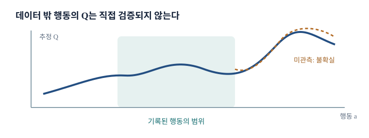

Offline RL
데이터가 고정되면 달라지는 문제
지금까지의 off-policy 알고리즘은 과거 경험을 replay하면서도 새 정책으로 환경을 계속 방문했다. Offline RL에서는 처음 받은 데이터셋만으로 정책을 학습하고 학습 중 새 전이를 얻지 못한다. 따라서 “모르는 행동을 한 번 실행해 확인”하는 길이 막힌다. 목표는 고정 데이터가 허용하는 근거 안에서 행동을 개선하는 것이다.
병원 기록에서 어떤 처치를 시도하지 않은 환자군이 있다면 그 처치의 결과를 기록만으로 직접 알 수 없다. 로봇에서도 위험해 보여 한 번도 실행하지 않은 토크 명령의 가치를 critic이 높게 예측할 수 있다. Offline RL의 핵심은 좋은 행동을 찾는 일과 자료가 말할 수 있는 범위를 동시에 다루는 것이다.
이 장의 방법 지도
TD3+BC는 학습 정책을 데이터 행동 근처에 묶는다. CQL은 데이터 밖 행동의 Q값이 부당하게 높아지지 않도록 critic을 보수화한다. Filtered BC는 좋은 궤적만 모방하고, AWR은 행동의 상대적 가치를 가중치로 써 모방한다. IQL은 데이터에 없는 행동의 Q를 직접 평가하지 않고 가치와 정책을 배운다. 방법마다 데이터 지지 밖을 다루는 위치가 다르다.
방법들의 위치를 기억하려면 “어디에서 보수성이 들어가는가”를 보면 된다. TD3+BC는 actor의 행동을 시연 근처로 묶고, CQL은 critic의 데이터 밖 Q를 낮춘다. AWR과 IQL은 데이터 안 행동에 높은 가중치를 주어 정책을 뽑는다. 같은 고정 자료를 쓰더라도 오류를 억제하는 연산의 위치가 다르다.
Offline과 online의 자료 흐름
Online RL은 자료를 수집하고 갱신한 뒤 바뀐 정책으로 다시 자료를 모은다. Offline RL은 \(\mathcal D\)가 고정되어 학습 중 행동해도 그 결과가 추가되지 않는다. 학습된 정책을 최종 평가할 때 환경에서 실행할 수는 있지만, 그 평가 자료로 다시 학습했다면 순수 offline 설정이 아니다. 실험 보고서에서 이 경계를 명확히 해야 한다.
온라인 SAC의 replay buffer가 현재 10만 전이를 담고 있어도, 다음 rollout으로 새 actor의 결과를 확인해 넣을 수 있다. Offline SAC에는 그 통로가 없다. 같은 저장 형식과 같은 손실 함수를 써도 데이터 수집이 멈췄는가라는 조건 하나가 학습의 위험을 바꾼다.
행동 정책과 목표 정책
\(\mathcal D=\{(s,a,r,s',d)\}\)의 행동은 알 수 없거나 혼합된 행동 정책 \(\beta\)에서 나왔다. 학습 목표는 새 정책 \(\pi_\theta\)의 \(J(\pi)=E_{\tau\sim\pi}[\sum_t\gamma^t r_t]\)를 높이는 것이다. 자료의 상태–행동 분포 \(d^\beta(s,a)\)와 새 정책의 \(d^\pi(s,a)\)가 다르면, \(\mathcal D\)에서 작은 예측 오차도 실제 정책 아래에서는 크게 작용할 수 있다.
“off-policy”라는 말은 수집 정책과 학습 정책이 다르다는 뜻이다. Online off-policy는 계속 새 자료를 넣을 수 있지만 offline은 그 보정 기회가 없다.
예를 들어 기록 정책 \(\beta\)가 어떤 상태에서 A를 99% 실행하고 B를 1%만 실행했는데 새 정책 \(\pi\)가 B를 90% 실행한다면, B의 가치 오차가 실제 정책 성과를 좌우한다. 고정 데이터에는 B 표본이 아주 적다. 단순히 전체 회귀 손실이 작다고 새 정책에서도 Q가 정확하다고 볼 수 없는 이유다.
BC와 궤적 연결
BC는 데이터의 각 상태에서 관측된 행동을 흉내 낸다. 예를 들어 데이터에 A→B와 B→C를 성공한 부분 경로가 따로 있으면 가치 기반 offline RL은 A에서 B로 간 뒤 B에서 C로 가는 새 조합을 찾아 A→C 과제를 해결할 수 있다. 이 stitching은 각 부분의 전이가 데이터에 충분히 존재하고, 상태 표현이 B를 같은 상태로 인식할 때 가능하다.
나쁜 시도도 그 행동의 결과와 보상을 알려 주므로 RL에는 정보가 된다. 다만 데이터에 전혀 없는 A→C 지름길의 가치를 증명해 주지는 않는다.
부분 경로 A→B와 B→C가 각각 데이터에 충분하다면, 두 경로를 이어 A→C를 만드는 정책은 BC가 직접 복제한 한 궤적보다 좋아질 수 있다. 반대로 A→B가 한 조명 조건에서, B→C가 전혀 다른 숨은 조건에서 나온 것이라면 겉보기 상태 B가 같아도 이어 붙일 수 없다. Stitching에는 상태 표현과 전이 조건의 일관성이 필요하다.
보지 못한 행동의 함정
데이터에서 상태 \(s'\)의 행동이 \(a_1\) 근처뿐인데 critic이 먼 \(a_2\)에 높은 \(Q(s',a_2)\)를 예측했다고 하자. 학습 손실은 데이터의 \((s',a_2)\)를 검사하지 못하므로 그 큰 예측을 교정할 근거가 없다. 그런데 actor나 \(\max_aQ\)가 바로 \(a_2\)를 선택해 높은 값을 이전 상태로 전파한다.
이것은 행동의 out-of-distribution(OOD) 예측과 부트스트랩이 결합한 오류다. Online 방법은 \(a_2\)를 실행해 확인할 수 있지만 offline은 보수적 제약이나 데이터 안 행동만의 개선이 필요하다. Offline RL 개관
두 행동의 실제 Q가 A=5, B=0인데 데이터에는 A만 있다고 하자. 신경망이 B를 12로 예측해도 B의 표본이 없으면 그 예측을 벌할 supervised target이 없다. Actor가 B를 선택하면 다음 상태의 Bellman 목표에 12가 들어가 이전 상태의 Q까지 높아질 수 있다. 추정 오류의 선택과 전파가 함께 일어난다.
언제 필요한가
로봇의 충돌, 임상 처치의 위험, 자율주행의 사고처럼 무작위 탐색이 비싸거나 안전하지 않을 때 이미 모인 기록이 유용하다. 과거 실험이나 다른 프로젝트의 자료를 다시 활용할 수도 있다. 하지만 실제 의료·운전 의사결정은 기록 누락, 선택 편향, 안전 제약이 복잡하므로 offline RL 모델 하나의 평가 점수만으로 배포할 수 없다. 이 장의 알고리즘은 고정 자료에서 학습하는 기술적 문제를 다룬다.
의료 기록에서 투약을 바꿔 볼 수 없다는 예는 학습 설정의 필요성을 보여 주지만, 실제 진료에서는 기록되지 않은 중증도와 담당 의사의 판단이 행동 선택에 영향을 줄 수 있다. 이런 숨은 교란이 있으면 고정 데이터의 인과적 해석도 어려워진다. Offline RL의 벤치마크 성능을 곧바로 의료 의사결정의 안전성으로 옮기면 안 되는 이유다.
보통 off-policy Q-learning을 그대로 쓰면
일반 목표 \(y=r+\gamma\max_{a'}Q(s',a')\)는 데이터 밖 \(a'\)도 최댓값 후보로 삼는다. Critic은 그 행동에서 틀릴 수 있고, 최대화는 특히 양의 오류를 택한다. 작은 과대평가가 Bellman 갱신마다 이전 상태로 퍼지면서 정책이 실제로는 형편없는 OOD 행동을 선호한다. 정적 데이터에서 가장 중요한 차이는 새 행동을 시도해 오류를 바로잡을 수 없다는 것이다.
보통 Q-learning의 \(\max_{a'}\)는 모든 행동을 후보로 두지만 데이터는 일부 행동만 보여 준다. 데이터 밖 행동의 Q가 우연히 커지면 최대값이 그 오류를 고르고, Bellman 회귀가 그 숫자를 현재 행동의 목표로 사용한다. 한 번의 잘못된 외삽이 여러 이전 상태로 퍼지는 과정을 데이터 흐름으로 그려 볼 수 있다.

예측 Q와 실제 반환의 분리
정적 데이터로 SAC를 학습할 때 critic의 예측 Q가 계속 커지는데 실제 평가 반환은 개선되지 않거나 떨어지는 그래프는 이 오류를 보여 준다. 높은 학습 Q는 정책 성능의 독립 증거가 아니다. Critic이 자기 목표를 따라 숫자를 키웠을 수 있다. 평가 환경이 허용되는 연구에서는 rollout 반환을 따로 측정하고, 배포 전에는 데이터 coverage와 불확실성을 검토해야 한다. BEAR 연구
Critic이 예측한 평균 Q가 50에서 100으로 올라도 독립 평가 반환이 20 근처에 머무른다면, 모델 내부 수치의 상승은 성능 증거가 아니다. 벤치마크 시뮬레이터에서는 학습 완료 뒤 정책을 실행해 확인할 수 있지만 현실에서는 이런 시험 자체가 위험할 수 있다. 학습 목표의 값과 실제 정책 결과를 분리해 보고해야 한다.
Offline RL의 핵심 긴장
정책을 데이터 행동과 똑같이 만들면 안전하게 BC 수준에 머물 수 있지만 개선 여지가 작다. 데이터를 벗어날수록 좋은 행동을 찾을 가능성도 생기지만 Q 오차를 악용할 위험이 커진다. 핵심은 정책 개선과 분포 이동의 균형이다. 상태까지 새 영역으로 가면 한 단계 행동 제약만으로 위험을 모두 막을 수도 없다.
데이터와 똑같은 행동만 하면 BC의 성능에 가까워지고, 멀리 이동할수록 개선의 가능성과 불확실성이 함께 커진다. 데이터 행동 주변이라도 상태가 바뀌어 자료 밖으로 들어갈 수 있으므로 한 단계 행동 거리만으로 모든 위험을 막을 수는 없다. 정책의 행동 이동과 방문 상태 이동을 함께 생각해야 한다.
두 가지 주요 통제 위치
첫째, 정책 자체가 데이터 행동에서 멀어지지 않게 제약한다. 둘째, critic이 데이터 밖 행동에 지나치게 큰 값을 주지 않도록 훈련한다. 세 번째 길은 아예 데이터 안 행동의 반환이나 상대적 가치를 기반으로 정책을 추출하는 것이다. 이후 방법들을 “어떤 값을 낮추는가”, “어떤 행동에만 높은 가중치를 주는가”로 비교하면 혼동이 줄어든다.
Actor 제약은 정책이 낼 수 있는 행동의 범위를 직접 줄이고, critic 보수화는 정책이 높은 Q를 보고 이동할 유인을 줄인다. 두 접근 모두 개선을 억제할 위험이 있으므로 제약의 강도를 조정해야 한다. 데이터 품질이 낮을 때에는 단순 BC와의 비교가 특히 중요하다.
TD3+BC의 목적
TD3의 actor는 \(E_{s\sim\mathcal D}Q_\phi(s,\pi_\theta(s))\)를 최대화한다. TD3+BC는 여기에 데이터 행동과의 제곱거리 벌점을 더한다.
\(\lambda\)가 크면 가치 개선을 더 중시하고 작으면 BC에 가까워진다. 논문의 실제 구현은 Q 크기를 정규화해 두 항의 척도를 맞춘다. 데이터 행동이 무작위적이고 매우 나쁘다면 지나친 제약이 개선을 막지만, 제약이 약하면 OOD Q 오류가 다시 나타난다. TD3+BC 논문
한 상태의 기록 행동이 \(a=0.2\)이고 actor 출력이 0.8이라면 제곱거리 벌점은 \((0.8-0.2)^2=0.36\)이다. Actor가 0.3으로 움직이면 벌점은 0.01로 줄지만 Q 개선이 작을 수 있다. \(\lambda\)는 Q의 숫자 단위에 민감하므로, 가치와 행동 거리 항의 크기를 맞추지 않으면 어느 한쪽만 손실을 지배한다.
두 항이 행동을 어느 방향으로 미는지도 직접 미분할 수 있다. 한 상태에서 \(u=\pi_\theta(s)\)라 놓으면 최대화할 함수와 그 행동 기울기는
첫 항은 critic이 예측한 가치 상승 방향이고, 둘째 항은 actor를 기록 행동으로 당긴다. \(Q\)가 국소적으로 \(Q(s,u)=cu+b\)인 1차원 예에서는 정지점이 \(u^*=a_{\mathcal D}+\lambda c/2\)다. 따라서 \(\lambda\)가 같아도 critic의 기울기 \(c\)가 크면 데이터에서 더 멀리 이동한다. 실제 행동 경계와 비선형 Q에서는 이 정지점이 그대로 최적해가 아니며, actor 파라미터에 대한 기울기는 위 식에 \(\nabla_\theta\pi_\theta(s)\)를 곱한 연쇄법칙으로 얻는다.
정책 제약과 가치 보수화
정책을 데이터에 묶는 방법은 이해하기 쉽지만 모든 상태에서 적절한 거리를 정하기 어렵다. 낮은 품질 데이터와 높은 품질 데이터가 섞였다면 단일 BC 벌점은 좋은 행동으로의 이동도 제한할 수 있다. CQL은 반대로 Q함수의 학습 목표를 바꿔 데이터 밖 행동의 매력을 낮춘다.
가치 보수화도 무조건 낮은 값을 만들면 좋은 개선 가능성을 지워 버린다. 목표는 데이터 안 행동과 데이터 밖 행동 사이의 상대적 값에 신뢰 가능한 간격을 주는 것이다.
행동 거리의 의미는 과업마다 다르다. 관절 토크 벡터에서 0.1 차이가 작은 변화일 수 있지만 접촉 직전 그리퍼 닫힘 명령의 0.1 차이는 성공과 실패를 가를 수 있다. 단일 L2 벌점은 이런 중요도를 자동으로 알지 못한다. 정책 제약을 쓸 때 행동 정규화와 차원별 단위를 먼저 확인해야 한다.
데이터 밖 Q를 낮추는 이유
일반 Bellman 오차는 데이터 안 \((s,a)\)에서만 계산된다. 그래서 데이터 밖 행동의 Q에는 직접적 벌점이 없다. CQL은 데이터 밖 후보의 높은 Q를 비용으로 만들고 데이터 안 행동의 Q를 상대적으로 유지한다. 그러면 actor가 \(Q\)의 허점을 찾아 멀리 이동하는 유인이 줄어든다. 단, 정말 좋은 미관측 행동까지 낮출 수 있는 보수성의 비용이 있다.
데이터에는 A 행동의 반환만 있고 B는 보지 못했다고 하자. Bellman 손실은 A의 Q를 맞추지만 B의 Q가 100이어도 직접 교정하지 못한다. CQL은 그런 후보 행동의 큰 Q에 비용을 주어 actor가 B를 고를 유인을 낮춘다. 단, B가 실제로 좋은 행동이었다면 보수성 때문에 개선 가능성을 놓칠 수 있다.
CQL의 첫 목적식
표준 critic 회귀 \(\mathcal L_{\mathrm{Bellman}}(Q)\)에 후보 행동 분포 \(\mu\)에서의 높은 값을 벌점으로 더하는 생각은
로 쓸 수 있다. 최소화하므로 두 번째 항은 \(\mu\)가 자주 제안하는 행동의 Q를 내린다. 그러나 모든 행동을 함께 내리면 데이터 행동의 가치까지 과하게 낮아질 수 있다. 다음 단계에서 데이터 행동의 Q를 끌어올리는 상대적 항을 넣는다. CQL 논문
후보 분포 \(\mu\)가 데이터 밖 행동 B를 많이 뽑는다면 \(E_{a\sim\mu}Q(s,a)\) 벌점은 B의 값을 낮춘다. 하지만 \(\mu\)가 데이터 행동만 뽑거나 중요한 OOD 행동을 놓치면 원하는 효과가 약해진다. 그래서 CQL의 구현을 볼 때는 정규화 계수뿐 아니라 후보 행동을 어떻게 샘플했는가를 함께 확인해야 한다.
데이터 행동과의 상대적 보수성
CQL의 핵심 정규화 항은
이다. 최소화하면 후보 행동의 Q는 내리고 실제 데이터 행동의 Q는 상대적으로 올린다. “모든 \((s,a)\)에서 학습 Q가 참 Q보다 낮다”는 강한 보장으로 읽으면 안 된다. 논문이 분석하는 보수성은 특정 정책과 데이터 분포 아래의 기대 가치에 관한 조건부 주장이다. \(\alpha\)가 너무 크면 실제로 좋은 행동까지 억누를 수 있다.
데이터 행동 Q가 5, OOD 후보 Q가 8이라면 차이 항은 OOD 쪽을 내리고 데이터 쪽을 상대적으로 높이는 방향을 준다. 그러나 모든 상태–행동에서 절대적 하한을 만드는 것은 아니다. 보수성은 자료와 정책 분포의 가정 아래 기대값에 관한 주장임을 기억하고, 실제 평가 반환을 따로 확인해야 한다.
Log-sum-exp가 나오는 이유
이산 행동에서 \(\mu\)를 정하지 않고 \(E_{a\sim\mu}Q(s,a)+H(\mu)\)를 최대화하면, 라그랑주 승수로 확률 합 1을 강제했을 때 최적 \(\mu(a\mid s)\propto e^{Q(s,a)}\)다. 이를 대입하면
Log-sum-exp는 큰 Q를 부드럽게 강조하는 \(\max\)의 근사다. 연속 행동에서는 합을 전부 계산할 수 없어 정책·균등분포 등에서 행동을 샘플링해 근사한다. 후보 샘플의 분포와 밀도 보정을 무시하면 실제 구현의 목적이 달라진다.
두 행동 Q가 2와 0이면 \(\log(e^2+e^0)\approx2.13\)이다. 최댓값 2보다 조금 큰 값으로 높은 Q를 부드럽게 강조한다. 데이터 행동이 Q=2인 쪽이라면 정규화 항은 약 0.13이지만 Q=0인 쪽이라면 약 2.13이다. 데이터 밖의 높은 행동과 데이터 행동 사이의 차이가 벌점에 어떻게 들어가는지 볼 수 있다.
중간 유도를 쓰면 \(F(\mu)=\sum_a\mu_aQ_a-\sum_a\mu_a\log\mu_a\)를 \(\sum_a\mu_a=1\) 아래 최대화한다. 라그랑주 승수 \(c\)를 넣어 \(\mu_a\)로 미분하면 \(Q_a-\log\mu_a-1+c=0\), 따라서 \(\mu_a\propto e^{Q_a}\)다. 정규화하면 \(\mu_a=e^{Q_a}/\sum_b e^{Q_b}\)이고 이를 \(F\)에 대입한 값이 \(\log\sum_b e^{Q_b}\)다. 이 값의 \(Q_a\) 미분도 \(\mu_a\)이므로 log-sum-exp 항에서는 큰 Q를 가진 행동이 더 큰 하향 압력을 받는다. 실제 CQL 정규화에서는 데이터 행동 Q를 올리는 상대적 항도 함께 작용한다. CQL 원논문
CQL 학습과 조절 계수
이산 행동의 대표 형태는
연속 행동 SAC와 결합할 때는 적절한 행동 샘플링으로 log-sum-exp를 근사한다. \(\alpha\)가 크면 분포 밖 낙관을 줄이지만 정책이 너무 보수적으로 남을 수 있다. 값의 척도와 샘플 수를 함께 조절해야 한다. CQL 논문
연속 행동에서 비교할 대상은 이산 합에 대응하는 \(I(s)=\log\int_{\mathcal A}\exp\{Q(s,a)\}\,da\)다. 후보 행동 \(a_j\)를 밀도 \(q(a\mid s)>0\)에서 \(N\)개 뽑으면 적분 안쪽은 중요도 샘플링으로 근사할 수 있다.
마지막 합에 로그를 취해 \(I(s)\)를 근사한다. 특정 행동을 자주 뽑는 제안분포 \(q\)를 사용하면서 \(1/q\)를 빼면 그 행동의 높은 Q를 과도하게 반영한다. 반대로 \(q\)가 중요한 영역에 거의 질량을 주지 않으면 몇 개 표본의 가중치가 커져 근사가 불안정하다. 유한 표본에서 로그를 취한 추정량 자체는 편향될 수 있으며, 구현의 행동 샘플링·밀도 보정·수치 안정화가 결과에 영향을 준다.
\(\alpha\)가 너무 작으면 OOD Q 오류를 충분히 누르지 못하고, 너무 크면 실제 개선 가능한 행동도 낮게 평가할 수 있다. Bellman 손실과 CQL 정규화 항의 값을 따로 기록하면 어느 항이 학습을 지배하는지 볼 수 있다. 학습 Q가 낮아졌다는 사실 자체가 정책 성능이 좋아졌다는 뜻은 아니다.
Offline RL의 평가는 왜 까다로운가
학습 중 새 환경 상호작용을 금지해도 연구 벤치마크의 최종 평가는 시뮬레이터에서 실행할 수 있다. 실제 위험 환경에서는 그렇게 쉽게 평가할 수 없고, logged data만으로 다른 정책의 성능을 추정하는 off-policy evaluation이 필요하다. 이 추정 역시 데이터의 행동 coverage와 수집 정책 확률에 민감하다. 벤치마크의 온라인 평가 가능성과 실제 배포 전 검증 가능성을 구분한다.
학습 중 환경 호출을 금지한 실험이라도 최종 시뮬레이터 평가가 허용된다면 정책 성과를 직접 측정할 수 있다. 현실 로그만 있는 상황에서는 새 정책을 실행하지 않고 평가해야 하므로, 데이터에 거의 없는 행동에 대한 반사실적 결과를 추정해야 한다. Offline RL의 학습 문제와 off-policy evaluation의 검증 문제를 분리해 보자.
한 단계짜리 예에서 수집 정책 \(\beta\)가 행동 A를 0.9, B를 0.1 확률로 골랐고 새 정책 \(\pi\)는 B를 0.9 확률로 고른다고 하자. B의 보상 표본은 드물지만 중요도 비율 \(\pi(B)/\beta(B)=9\)로 크게 가중된다. 평균을 맞추는 원리는 분명해도 B 표본 하나의 우연한 보상이나 측정 오류가 평가값을 크게 흔들 수 있다. \(\beta(B)=0\)이었다면 그 행동의 실제 결과를 로그만으로 식별할 수 없다. 그래서 offline 정책의 추정 성능에는 coverage와 불확실성을 함께 제시해야 한다.
D4RL 데이터셋
D4RL은 고정된 MuJoCo 및 다른 환경 자료를 제공해 offline 알고리즘을 같은 데이터로 비교하게 한다. random, medium, medium-replay, medium-expert 등은 수집 행동의 품질과 혼합 방식이 다르다. Expert 자료가 많을수록 BC가 강한 기준선이 되지만, 다양한 품질의 replay에는 RL의 재가중·stitching 여지가 커질 수 있다.
점수는 보통 환경별 reference score로 정규화된다. 그래서 서로 다른 환경의 raw return이나 버전이 다른 정규화 점수를 단순 합산하면 안 된다. D4RL 논문
같은 Ant 과제에서도 expert 데이터는 높은 반환 행동이 많지만 상태 범위가 좁을 수 있고, medium-replay 데이터는 학습 중 여러 수준의 행동을 포함해 stitching 가능성이 있다. 어느 쪽이 무조건 쉽다고 볼 수 없다. 알고리즘 점수를 읽을 때 데이터셋 이름 뒤에 숨은 수집 정책의 품질과 coverage를 확인해야 한다.
데이터의 질과 다양성
자료가 한 정책의 거의 동일한 성공 궤적만 담으면 모방하기는 쉬워도 대체 경로의 가치를 평가하기 어렵다. 반면 random 자료는 다양한 상태를 방문하지만 좋은 행동의 연속이 드물다. Offline RL의 실험은 데이터 크기만이 아니라 성공 비율, 행동 범위, 궤적 길이, 행동 정책의 혼합을 함께 보고해야 한다. 데이터셋의 장면 그림을 볼 때도 “얼마나 많은 transition인가”와 “어떤 영역을 덮는가”를 따로 묻는다.
성공 궤적 100개가 모두 같은 초기 위치에서 나왔고 실패 궤적 1000개가 다양한 위치에서 나왔다면, 성공 궤적만 남기는 정책은 시작 분포가 바뀔 때 약할 수 있다. 데이터 품질과 다양성은 하나의 축이 아니다. 성공률, 시작 상태의 범위, 행동 종류를 함께 보고 학습 방법을 고르자.
OGBench와 목표 조건부 학습
OGBench는 주어진 목표 \(g\)를 달성하는 \(\pi(a\mid s,g)\)를 offline 데이터에서 학습하는 과제를 제공한다. 고정 데이터의 부분 경로를 연결해 보지 못한 시작–목표 조합을 해결하는 능력을 시험한다. 한 목표에서 높은 반환을 내는 정책과 다양한 목표를 처리하는 정책의 평가는 다르다. 데이터의 goal coverage, 성공 판정과 평가 목표 분포를 함께 확인한다. OGBench 논문
목표가 B인 궤적과 목표가 C인 궤적이 따로 있을 때, 같은 중간 상태를 지나면 부분 경로를 이어 새로운 시작–목표 조합을 해결할 수 있다. 그러나 상태가 비슷해 보인다는 이유만으로 연결하면 숨겨진 물체 위치나 속도의 차이 때문에 실패할 수 있다. 목표 조건부 정책의 성과를 볼 때 보지 못한 목표 조합과 새로운 환경 상태를 따로 평가해야 한다.
TD3+BC와 CQL을 비교하기
TD3+BC는 actor 손실에서 데이터 행동과의 거리 벌점을 두므로 “멀리 가지 않기”가 직접적이다. CQL은 critic이 데이터 밖 행동을 높게 평가하지 못하게 해 actor가 그 행동을 고르기 어렵게 만든다. 전자는 행동 거리 척도에, 후자는 \(\alpha\)와 후보 행동 샘플링에 민감하다. 두 방법 모두 데이터 밖에 정말 좋은 행동이 있어도 지나치게 보수적이면 그 가능성을 놓친다.
행동이 연속 벡터라면 TD3+BC의 거리는 관절별 단위와 정규화에 민감하다. CQL은 후보 행동의 샘플링 분포와 \(\alpha\)에 민감하다. 두 방법이 같은 벤치마크에서 비슷한 점수를 얻어도 서로 다른 오류를 억제한 결과일 수 있다. 데이터 범위를 바꾸어 비교하면 어느 제약이 유리한지 더 잘 드러난다.
다른 개선 경로의 질문
정책 제약과 보수적 critic도 학습 중에는 데이터 밖 행동의 Q를 어느 정도 묻는다. 만약 오직 기록된 행동만 가치 평가에 넣으면서 좋은 행동을 더 선호할 수 있다면 OOD 문제를 더 직접적으로 피할 수 있다. 이어지는 Filtered BC, AWR, IQL은 이 방향의 서로 다른 해법이다.
“데이터 안 행동만 쓴다”는 전략은 안전하지만 자료에 없는 새로운 행동을 직접 평가하거나 창조하지 못한다. 대신 여러 품질의 기록 행동 중 좋은 쪽을 더 자주 선택하게 만들 수 있다. 이 접근이 통하려면 좋은 행동이 적어도 데이터 어딘가에 존재해야 한다는 전제가 필요하다.
OOD 평가가 남는 자리
TD3+BC의 actor 항 \(Q(s,\pi(s))\)에서 \(\pi(s)\)가 기록된 \(a\)와 완전히 같지 않으면 critic은 미관측 행동을 평가한다. CQL 역시 정규화 항과 정책 갱신에서 후보 행동의 Q를 계산한다. 벌점이 오류를 줄일 수는 있어도 그런 계산 자체가 사라지는 것은 아니다. 그래서 데이터 안 행동의 정보를 직접 이용하는 방법이 유용하다.
정책이 데이터 행동에서 0.01만큼 벗어나도 critic이 그 점을 본 적이 없다면 일반화에 의존한다. 행동 제약이나 CQL 벌점은 위험을 줄이지만 그 평가 자체를 없애지는 않는다. AWR처럼 기록 행동의 로그확률만 학습하는 방법은 actor 업데이트에서 이 질문을 피하는 대신 데이터 support 밖 개선의 폭이 작다.
보상을 쓰는 행동복제
일반 BC는 성공한 시도와 실패한 시도의 \((s,a)\)를 모두 같은 가중치로 모방한다. 데이터에 보상이 있다면 어떤 시도가 좋았는지 알 수 있으므로 이를 정책 추출에 반영할 수 있다. 가장 단순한 방법은 성공 궤적을 골라 BC하는 것이다. 단, “성공”을 전체 반환 하나로 판단하면 같은 궤적 안의 나쁜 개별 행동까지 함께 모방할 수 있다.
상태 \(s\)에서 두 시연 행동이 있고 하나는 성공 1, 다른 하나는 실패 0이라면 BC는 둘을 비슷하게 따라 할 수 있다. 보상으로 성공한 궤적에 더 큰 가중치를 주면 행동 선택을 개선할 가능성이 생긴다. 그러나 실패한 궤적의 어떤 단계가 실제 원인인지 구분하지 못하면 좋은 중간 행동까지 버릴 수 있다.
Filtered BC
각 궤적의 반환 \(R(\tau)=\sum_t\gamma^t r_t\)를 계산하고 상위 \(K\%\) 또는 임계값 \(\eta\) 이상인 궤적만 남긴다. 이어 \(\max_\theta E_{(s,a)\sim\widetilde{\mathcal D}}\log\pi_\theta(a\mid s)\)로 모방한다. 반환이 큰 궤적이 반드시 모든 상태에서 최선의 행동으로 구성되지는 않는다. 쉬운 초기 상태를 받은 궤적이 높게 평가되고 어려운 상태에서 잘 대처한 궤적이 버려질 수도 있다.
성공 궤적만 남기면 오히려 나빠질 수도 있나?
가능하다. 남은 자료가 매우 작아지거나 특정 초기 상태만 대표하면 배포 때 다른 상태를 다루지 못한다. 상태 난도와 운의 영향까지 고려하려면 같은 상태에서 행동의 상대적 품질을 추정해야 한다.
두 궤적 중 하나는 쉬운 시작 상태라 반환 100, 다른 하나는 어려운 시작 상태라 80을 얻었다면 100만 남기는 선택이 꼭 좋지 않다. 두 번째 정책이 어려운 상태에서 더 좋은 복구 행동을 보였을 수도 있다. 전체 궤적의 절대 반환 대신 상태별 기준을 뺀 advantage를 쓰려는 이유다.
상위 몇 퍼센트를 남길지도 자료의 질과 coverage에 따라 달라진다. 대부분의 궤적이 유용하고 소수만 센서 오류나 실패를 담았다면 상위 90%를 남겨 상태 다양성을 지킬 수 있다. 반대로 실패 궤적이 대부분이면 상위 10%가 더 깨끗한 행동 라벨을 줄 수 있지만, 그 작은 집합만으로는 드문 시작 상태를 다루기 어렵다. 또한 초반에 잘못 움직였다가 뒤에서 복구해 총반환이 높아진 궤적은 통째로 선택된다. 선택된 궤적의 모든 행동이 좋은 것은 아니다라는 점이 다음 AWR의 전이별 가중치로 이어진다.
AWR의 연속적 가중치
AWR은 반환을 이분법으로 자르지 않고 각 행동의 상대적 우수성을 가중치로 만든다. 데이터에서 \(\widehat V(s_t)\)를 반환 \(R_t\)에 회귀하고 \(\widehat A_t=R_t-\widehat V(s_t)\)를 만든다. 이후
로 가중 BC를 한다. \(\eta\)가 작으면 높은 advantage에 가중치가 몰리고 커지면 거의 BC가 된다. 보통 폭주를 막기 위해 가중치를 clip한다. 강의 표기의 \(e^{\beta \widehat A}\)는 \(\beta=1/\eta\)에 해당한다. AWR 논문
\(\eta=1\)에서 advantage가 2인 행동의 가중치는 \(e^2\approx7.39\), advantage가 -1인 행동은 \(e^{-1}\approx0.37\)이다. 두 행동의 가중치 비가 약 20배가 된다. \(\eta\)가 작아지면 이 차이가 더 커져 소수의 표본만 학습을 지배할 수 있으므로 가중치 clipping이나 정규화가 필요하다.
KL 제약에서 지수 가중치가 나오는 직관
한 상태에서 기존 행동 분포 \(\beta(a\mid s)\)를 크게 바꾸지 않으면서 \(E_{\pi}Q(s,a)\)를 높이고 싶다고 하자. \(D_{\mathrm{KL}}(\pi\|\beta)\le\epsilon\)를 벌점 \(\eta D_{\mathrm{KL}}\)로 옮겨 최적화하면, 정규화 상수를 제외한 해가
가 된다. \(V(s)\)는 같은 상태의 모든 행동에 공통이라 정규화 상수로 흡수된다. 그래서 데이터 행동을 advantage 지수로 재가중한 지도학습이 이 개선을 근사한다. 실제 AWR은 근사 가치와 제한된 함수계열을 쓰므로 이 이상적인 식과 완전히 같지 않다.
같은 상태의 행동 A와 B가 기록 정책에서 각각 0.5 확률이고 Q가 4와 6이라면 \(\eta=1\)의 이상적 개선 분포는 \(e^4:e^6=1:e^2\) 비율이므로 B 쪽으로 기운다. 기존 확률 \(\beta\)가 0인 행동은 곱에 남지 않는다. 분포를 크게 벗어나지 않으면서 기록 행동의 상대 가치로 재가중한다는 식의 의미를 이 예에서 확인할 수 있다.
지수 가중치의 출처를 한 단계씩 계산해 보자. 고정 상태에서 \(F(\pi)=\sum_a\pi_aQ_a-\eta\sum_a\pi_a\log(\pi_a/\beta_a)\)를 최대화하고 \(\sum_a\pi_a=1\)을 강제한다. \(\pi_a\)에 대한 정지 조건은 \(Q_a-\eta[\log(\pi_a/\beta_a)+1]+c=0\)이다. 이를 \(\pi_a\)에 대해 풀면 \(\pi_a=\beta_a\exp(Q_a/\eta)\exp(c/\eta-1)\)이고, 마지막 공통인자를 정규화 상수로 흡수하면 위 식이 나온다. 상태마다 공통인 \(V(s)\)를 \(Q\)에서 빼도 행동 간 비율은 같아져 \(e^{A/\eta}\)를 사용할 수 있다.
왜 KL의 방향을 \(D_{\mathrm{KL}}(\pi\|\beta)\)로 쓰는가?
이 방향의 KL은 \(\beta(a\mid s)=0\)인 행동에 새 정책이 양의 확률을 주면 무한대가 된다. 따라서 이상적인 해의 support가 기록 정책 안에 남는다. 반대 방향 \(D_{\mathrm{KL}}(\beta\|\pi)\)는 같은 최적화 해와 같은 support 제약을 주지 않는다.
AWR의 장점과 경계
Actor는 데이터에 있는 행동의 로그확률로만 훈련하므로 critic에 임의 OOD 행동을 직접 묻지 않는다. 그러나 \(R_t\)는 수집 행동 정책을 따라 얻은 미래의 Monte Carlo 반환이어서 분산이 높고, AWR이 평가하는 advantage는 주로 행동 정책의 결과에 가깝다. 새로운 정책이 더 나은 미래 행동을 취할 때의 가치를 정확히 반영하기 어렵다. IQL은 데이터 행동만 평가하면서도 좋은 후속 행동의 가치를 부트스트랩하려 한다.
AWR의 actor는 기록 행동을 가중해 모방하지만 그 가중치의 근거인 Monte Carlo 반환은 수집 정책의 나머지 행동에 좌우된다. 현재 행동이 좋았어도 이후 수집 정책이 실패하면 낮은 가중치를 받을 수 있다. 정책 개선 뒤에는 더 나은 후속 행동을 할 수 있다는 가능성을 충분히 반영하지 못하는 한계다.
두 단계 예를 보자. 현재 행동 A는 보상 0을 주고 다음 상태로 가며, 그 상태의 데이터에는 보상 10인 좋은 행동과 보상 0인 나쁜 행동이 모두 있다. 수집 정책이 좋은 행동을 10%만 골랐다면 \(\gamma=1\)에서 A의 수집 정책 기준 기대 반환은 \(0.1\cdot10+0.9\cdot0=1\)이다. 현재 행동 B는 즉시 2를 받고 종료한다고 하자. A를 실행한 자료의 90%는 반환 0을 기록하므로 AWR에서는 이 사례들이 낮게 가중된다. 드문 반환 10 사례에는 큰 지수 가중치가 붙으므로 A와 B의 최종 가중치 순위는 온도와 표본 수에 따라 달라진다. 그러나 다음 상태에서 좋은 기록 행동을 선택하며 이어 갈 수 있다면 A 다음의 반환은 10이 될 수 있다. AWR의 Monte Carlo 가중치와 개선 정책의 미래 가치가 다른 이유이며, IQL은 데이터 안에 있는 좋은 후속 행동을 가치 부트스트랩에 반영하려 한다. 좋은 행동의 데이터가 전혀 없다면 이 개선도 불가능하다.
SARSA식 데이터 안 부트스트랩
일반 Q 목표의 \(\max_{a'}Q(s',a')\)는 미관측 행동을 고른다. 연속 데이터 궤적에 실제 다음 행동 \(a'_{\mathcal D}\)가 있다면 \(y=r+\gamma Q_{\bar\phi}(s',a'_{\mathcal D})\)로 바꿀 수 있다. 이는 데이터 밖 행동을 평가하지 않는 SARSA식 목표다. 그러나 다음 행동이 나쁜 수집 정책에서 왔다면 그 나쁜 행동의 가치까지 그대로 반영한다. 데이터 안에서 좋은 행동 쪽으로 개선할 장치가 필요하다.
SARSA식 목표에서 실제 다음 행동이 보상 0의 행동이라면, 데이터에 다른 좋은 행동이 있어도 그 전이의 목표는 낮게 계산된다. OOD 행동을 묻지 않는 장점과 기록 정책을 그대로 평가하는 한계가 함께 있다. IQL의 높은 expectile은 데이터 안에서 관측된 상대적으로 좋은 행동의 미래 가치를 대리한다.
데이터 행동 중 좋은 쪽을 고르기
이론적으로는 데이터 행동 분포 \(\beta(a\mid s)\)가 지지하는 행동 중 \(\max Q(s,a)\)를 택하고 싶다. 하지만 연속 상태에서 같은 \(s\)의 여러 행동을 충분히 관측하기 어렵고, 표본 최대값은 다시 오차에 민감하다. IQL은 데이터에서 관측한 \(Q(s,a)\)들의 상태별 상위 방향을 추정하는 상태 가치 \(V(s)\)를 학습한다. 그것이 명시적 OOD 행동 최대화의 대리 역할을 한다.
같은 상태에서 관측된 행동 Q가 \([1,2,9]\)라면 평균 4와 최대 9 사이의 어디를 \(V(s)\)로 둘지 결정해야 한다. 무작정 표본 최대 9를 고르면 오류나 드문 이상치에 민감하다. Expectile은 높은 값을 더 강하게 맞추는 부드러운 회귀로 상위 방향의 가치를 얻는다. 단, 데이터에 좋은 행동이 전혀 없다면 높은 expectile도 좋은 정책을 만들어 내지는 못한다.
Expectile 가치의 의미
일반 제곱오차 \(\min_vE[(Q-v)^2]\)의 최적값은 평균이다. IQL은 잔차 \(u=Q(s,a)-V(s)\)에 비대칭 가중치를 주어
를 최소화한다. \(\tau>0.5\)이면 \(V\)보다 높은 Q에 더 큰 벌점을 주어 \(V\)가 데이터 행동 Q분포의 위쪽으로 올라간다. \(\tau=0.9\)가 정확한 상위 10% 분위수라는 뜻은 아니다. Expectile은 가중 제곱오차의 해이고 quantile은 절댓값 기반의 다른 통계량이다. IQL 논문
Expectile 손실은 잔차의 부호에 따라 제곱오차의 가중치가 달라진다. \(Q>V\)이면 높은 Q를 놓친 벌점이 \(\tau\), \(Q<V\)이면 낮은 Q보다 V가 높은 벌점이 \(1-\tau\)다. \(\tau>0.5\)에서 높은 쪽의 벌점이 커지므로 최적 V가 평균보다 위로 움직인다. 같은 \(\tau\)의 quantile과 수치가 다르다는 점을 꼭 구분하자.
한 상태에서 \(V(s)=v\) 하나만 최적화한다고 보면 손실을 \(v\)로 미분한 정지 조건은
이다. 왼쪽은 \(v\)보다 높은 Q를 얼마나 놓쳤는가, 오른쪽은 낮은 Q보다 \(v\)를 얼마나 높게 잡았는가의 균형이다. \(\tau=0.5\)이면 두 편차의 균형점이 평균이 되고, \(\tau>0.5\)이면 높은 Q를 놓친 비용이 커져 균형점이 위로 간다. 이 식은 상위 몇 퍼센트를 단순히 골라 평균내는 절차와 다르다.
\(\tau=0.9\)이면 행동의 상위 10%만 선택하거나 90th percentile을 구하는가?
둘 다 아니다. Expectile은 높은 Q를 낮게 예측할 때 \(0.9\), 낮은 Q를 높게 예측할 때 \(0.1\)로 제곱오차를 가중해 하나의 상태가치를 맞춘다. Quantile은 잔차의 크기에 선형인 pinball loss를 최소화한다. 같은 \(0\)과 \(10\)의 반반 분포에서 \(0.9\) expectile은 \(9\)지만 \(0.9\) quantile은 \(10\)이다. IQL의 \(\tau\)는 선택할 표본의 비율도 아니다.
비대칭 제곱손실 예
\(\tau=0.9\)라면 \(u>0\), 즉 예측 \(V\)가 관측 Q보다 낮을 때 손실 가중치가 \(0.9\)다. \(u<0\)이면 가중치는 \(0.1\)이다. 높은 Q값을 놓친 경우 더 크게 벌하므로 최적 \(V\)가 올라간다. 예를 들어 같은 상태 행동 Q가 0과 10을 같은 확률로 갖는다면 평균은 5지만 \(\tau=0.9\) expectile은 \(0.1v^2+0.9(10-v)^2\)의 최소점 \(v=9\)다. 계산은 \(0.2v-1.8(10-v)=0\)에서 나온다.
위 정지 조건에 Q가 0과 10을 반반 갖는 분포를 대입하면 \(\tau(10-v)=(1-\tau)v\)가 되어 \(v=10\tau\)다. \(\tau=0.5\)에서는 평균 5, \(\tau=0.9\)에서는 9가 된다. 같은 두 점 분포의 0.9 quantile은 정의 관례에 따라 10인 반면 expectile은 9다. \(\tau\)가 커질 때 어떻게 부드럽게 위쪽으로 움직이는지와 quantile과 숫자가 다르다는 점을 동시에 확인할 수 있다.
IQL의 세 단계
첫째, 데이터 행동에 대한 \(Q_{\bar\phi}(s,a)\)로 상위 expectile \(V_\psi(s)\)를 맞춘다. 둘째, 실제 데이터 transition에 대해 \(y=r+\gamma(1-d)V_\psi(s')\)로 \(Q_\phi(s,a)\)를 회귀한다. 셋째, \(A(s,a)=Q_\phi(s,a)-V_\psi(s)\)를 구해 \(e^{\beta A}\)를 가중치로 데이터 행동을 모방한다.
Critic과 actor의 학습 입력은 모두 데이터 안 행동이다. 그럼에도 높은 expectile이 “데이터에서 좋은 행동이 이어질 것”이라는 개선을 미래 가치에 반영한다. 데이터 지지 자체가 빈약하면 새 행동을 근거 없이 창조할 수는 없고, expectile \(\tau\)와 가중치 온도 \(\beta\)에 민감하다. IQL 논문
IQL의 Q 목표 \(r+\gamma V(s')\)에는 다음 상태의 임의 actor 행동이 들어가지 않는다. V는 데이터 행동 Q들에서 학습한 높은 expectile이고, actor도 기록 행동의 가중 BC로 뽑는다. 이 구조가 학습 중 OOD 행동의 Q를 직접 묻지 않게 한다. 다만 actor를 실제로 실행하면 새 상태에 갈 수 있으므로 배포 안전성까지 자동 보장되는 것은 아니다.
학습 순서에서도 차이가 있다. \(V\)와 \(Q\)의 손실은 기록된 \((s,a,r,s')\)와 기록 행동의 Q만 사용하므로 actor \(\pi_\theta\)를 동시에 갱신할 필요가 없다. Critic을 충분히 학습한 뒤 \(\exp\{\beta(Q(s,a)-V(s))\}\)로 기록 행동만 가중해 actor를 추출할 수 있다. \(\tau\)는 가치가 데이터 안 Q의 어느 쪽에 가까울지, \(\beta\)는 추출 단계에서 좋은 행동에 얼마나 가중치를 몰아줄지를 조절한다. 두 계수의 효과를 한 가지 온도처럼 혼동하면 안 된다.
방법들의 공통 기준
TD3+BC와 CQL은 Bellman critic을 쓰되 정책 또는 가치에 제약을 둔다. Filtered BC와 AWR은 보상이 알려 주는 행동의 질을 모방 손실에 반영한다. IQL은 데이터 안 행동에 대한 가치 추정과 상위 expectile을 결합한다. 좋은 방법을 고를 때는 데이터의 품질·coverage, 연속/이산 행동, 새 상호작용 가능 여부를 함께 본다. 단일 benchmark 점수만으로 방법론을 고르면 안 된다.
방법을 선택할 때 데이터가 거의 전문가라면 BC의 단순함이 강력하고, 낮은 품질 궤적이 섞였지만 좋은 행동도 있다면 AWR·IQL의 가중이 유용할 수 있다. 데이터 support가 넓고 critic을 신뢰할 수 있다면 TD3+BC나 CQL의 가치 기반 개선을 검토할 수 있다. 이 판단은 이론적 가능성보다 실제 데이터 coverage와 독립 평가 결과에 달려 있다.
슬라이드의 IQL 비교 표는 이 차이를 구체화한다. 여러 locomotion 과제의 표에 실린 점수 합계에서는 10% BC가 666.2, IQL이 692.4로 단순한 방법도 경쟁력 있다. 그러나 antmaze 과제들의 합계에서는 10% BC가 134.2, IQL이 378.0이다. 미로 데이터는 목표까지 이어지는 완성 궤적만 모방하기보다 서로 다른 부분 경로의 좋은 행동을 이어 써야 할 수 있다. 이 숫자는 과제별 점수의 합계이므로 단일 환경의 성공률이나 모든 데이터셋에서의 보편적 우열로 읽으면 안 된다. IQL 원논문
고정 자료 학습의 응용
실제 응용에는 먼저 로그의 관측과 행동이 충분한지, 보상을 기록할 수 있는지, 최종 정책을 안전하게 검증할 수 있는지가 필요하다. 수집 시스템의 제약 때문에 실제 데이터는 누락, 센서 변경, 사람 개입, 정책 버전 혼합을 포함한다. 다음 사례들은 RL의 응용 가능성과 자료 재사용의 동기를 보여 주지만 각 사례가 순수 offline RL 알고리즘으로 구현되었다는 뜻은 아니다.
산업 로그에는 안전 관리자나 기존 제어기가 개입한 기록이 섞일 수 있다. 어떤 행동이 자동 제어의 선택이고 어느 행동이 사람의 긴급 조치인지 표시되지 않으면 행동 정책 \(\beta\)를 한 분포로 보기 어렵다. Offline 학습 전에 로그의 출처, 센서 변경 시점, 보상 누락을 정리해야 수식의 전제가 의미를 가진다.
로봇에서 offline 사전학습과 online 미세조정
여러 주방 과제의 기존 시연 자료로 정책이나 가치를 사전학습하면 새 목표 과제를 처음부터 탐색하지 않아도 된다. 그림의 흐름은 넓은 Bridge 자료로 사전학습하고, 새 과제 자료와 섞어 미세조정한 뒤, 실제 rollout을 더해 online 학습하는 단계다. 마지막 단계에서 새 데이터를 모으므로 전체 파이프라인은 순수 offline이 아니다.
혼합 비율이 너무 크면 새 과제를 충분히 반영하지 못하고, 너무 작으면 사전학습 지식이 사라질 수 있다. offline에서 online으로 넘어갈 때 critic의 분포 이동도 다시 점검해야 한다. 로봇 offline-to-online 연구
예를 들어 기존 시연으로 컵을 집는 정책을 만들고 새 물체의 시연 몇 개로 조정한 뒤 실제 로봇에서 추가 시행착오를 하면, 마지막 단계부터는 online 학습이다. “offline-to-online”이라는 이름은 단계의 전환을 분명히 표현한다. 단계별 성능과 새 환경 step 수를 따로 보고해야 고정 자료의 기여를 알 수 있다.
핵융합 플라스마 제어
토카막의 자기 코일 전압을 조절해 뜨거운 플라스마의 모양과 위치를 유지하는 것은 고차원 고속 폐루프 제어 문제다. 그림은 시뮬레이션에서 학습한 제어 정책과 실제 TCV 장치의 센서·코일 사이의 연결을 보여 준다. 위험한 실험 장치이므로 시뮬레이터 보정과 안전 한계, 실기 검증이 필수다. 이것은 RL의 현실 제어 사례이며, 그 자체를 고정 로그만으로 훈련하는 offline RL의 전형으로 오해하지 않아야 한다. TCV 연구
플라스마 제어에서는 정책 행동이 자기 코일 전압이고, 다음 센서값에 플라스마 모양과 위치가 반영된다. 시뮬레이터에서 충분히 훈련할 수 있어도 현실 장치의 허용 전압과 안전 한계를 넘어서는 행동은 시험할 수 없다. 이 사례는 현실의 순차 제어를 보여 주지만 알고리즘을 고정 로그 기반 offline RL로 분류할 근거는 아니다.
건물 냉각 제어
건물 냉각에서는 실내 온도와 외부 날씨, 에너지 사용량이 상태가 되고 냉방 장치 설정이 행동이 될 수 있다. 현재 전기를 아끼려고 냉방을 지나치게 줄이면 나중에 쾌적성 위반이나 더 큰 에너지 비용이 생겨 장기 보상이 중요하다. 그림의 “실제 건물 → 보정된 에너지 모델 → 학습 → 배포” 과정은 모델 차이를 검증해야 한다는 점을 보여 준다. 안전 제약과 사람이 운영하는 제어기와의 비교가 중요하며, 특정 건물 그림만으로 알고리즘의 보편적 절감률을 주장할 수 없다. 실제 데이터센터 냉각 사례
건물 냉각에서 지금 냉방을 줄이면 전력은 바로 아끼지만 실내 온도는 뒤늦게 올라갈 수 있다. 냉방을 과도하게 켰을 때의 전기 비용과 쾌적성 위반을 같은 보상에 넣더라도 계절과 건물 사용량에 따라 균형이 달라진다. 배포 전에 실제 건물의 안전 범위와 기존 제어기 대비 성과를 별도로 검증해야 한다.
칩 회로 설계와 PrefixRL
PrefixRL에서는 회로 그래프가 상태이고, 연결을 추가·변형하는 선택이 행동이다. 합성 도구가 회로의 면적과 지연을 평가해 보상을 만든다. 두 목표 사이에 tradeoff가 있으므로 보상 가중치가 다른 설계점을 낳는다. 화면의 Q-network는 후보 연결의 장기 효과를 근사한다. 시뮬레이터나 합성 도구로 새 회로를 평가할 수 있다는 점에서 이 사례 또한 offline 전용 방법을 설명하는 것은 아니다. PrefixRL 논문
회로 설계에서 면적을 10% 줄이면서 지연이 20% 늘어난 후보와, 면적을 5% 줄이고 지연을 유지한 후보 중 어느 쪽이 좋은지는 제약에 따라 다르다. 합성 도구로 새 설계를 평가할 수 있으면 탐색은 계속될 수 있으므로 이 사례는 데이터 고정 여부보다 보상 정의와 긴 설계 순서를 설명할 때 적합하다.
전체 정리
고정 데이터에서 정책을 개선하려면 데이터 밖 행동의 가치를 과신하지 않아야 한다. TD3+BC는 행동을 기록 근처에, CQL은 가치 평가를 보수적으로, Filtered BC는 좋은 궤적에, AWR은 높은 advantage 행동에, IQL은 데이터 안 행동의 높은 expectile에 초점을 둔다.
어느 방법도 데이터가 전혀 보여 주지 않은 영역의 실제 결과를 마법처럼 알 수 없다. 성능을 판단할 때는 수집 정책의 범위, 학습 중 새 자료 유무, 독립 평가 절차를 함께 명시한다. 이 기준은 로봇·산업 제어뿐 아니라 어떤 로그 기반 의사결정 문제에도 적용된다.
마지막으로 새로운 고정 데이터 문제를 만나면 네 가지를 먼저 묻자. 누가 자료를 모았는가, 어떤 행동이 빠졌는가, 보상을 어떻게 측정했는가, 새 정책을 어떻게 독립 검증할 수 있는가? 이 답이 있어야 BC와 가치 기반 방법의 차이, OOD 위험, 개선의 실질적 근거를 판단할 수 있다.